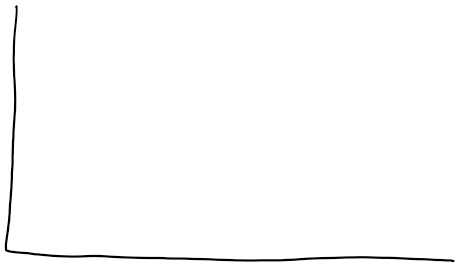
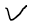

Reaction-Energy-Profiles
Reaction Energy Profiles
Reaction Energy Profile:
{width="7.916666666666667in" height="4.96875in"}
-
Potential energy: quantifiable, J, kJ, etc
-
Reaction coordinate: not quantifiable, monitors progress of reaction over time
-
Activation Energy: energy required for the reaction to occur
-
For the forward reaction: difference between the activation energy and the reactants:
-
 {width="2.53125in" height="0.3333333333333333in"}
{width="2.53125in" height="0.3333333333333333in"}-
 {width="3.6041666666666665in" height="0.3333333333333333in"}
{width="3.6041666666666665in" height="0.3333333333333333in"} -
 {width="4.78125in" height="0.3333333333333333in"}
{width="4.78125in" height="0.3333333333333333in"} -
{width="3.90625in" height="0.3333333333333333in"}
-
-
-
Activated complex:
-
Bonds partially formed
-
Bonds partially broken
-
Structure is committed to forming the product
-
{width="3.4583333333333335in" height="0.3333333333333333in"}
-
Increases required collision energy => less c
-
Collisions have the required energy
-
-
-
Endothermic reaction profile:
Reaction Energy Profile:
-
Temperature, activation energy, all other factors affecting reaction rate are all wrapped up in k (rate constant)
-
{width="4.34375in" height="0.3333333333333333in"}
-
{width="4.989583333333333in" height="0.3333333333333333in"}
-
 {width="6.114583333333333in" height="0.3333333333333333in"}
{width="6.114583333333333in" height="0.3333333333333333in"}
-
-
Changing temperature DOES NOT CHANGE reaction profile
- Only changes the amount of collisions and the amount of collisions able to overcome activation energy (speeds up molecules)
 {width="7.78125in" height="3.9375in"}
{width="7.78125in" height="3.9375in"}
-
When a catalyst is used, activation energy decreases
-
More collisions now have sufficient energy
-
Reaction rate increase
-
 {width="4.1875in" height="3.6666666666666665in"}
{width="4.1875in" height="3.6666666666666665in"}
, LE
,exothermic energy lost
being post
 {width="0.5520833333333334in" height="1.09375in"}
{width="0.5520833333333334in" height="1.09375in"}
.
 {width="0.5520833333333334in" height="1.09375in"}
{width="0.5520833333333334in" height="1.09375in"}
{width="0.7083333333333334in" height="0.125in"}
Enthalpy
(at)
At = Ep -E,
{width="3.3333333333333335in" height="2.3854166666666665in"}
,
{width="0.4895833333333333in" height="2.4375in"}{width="4.770833333333333in" height="2.7604166666666665in"}
activation
enemy
.
 {width="1.1770833333333333in" height="0.15625in"}{width="0.375in" height="1.1145833333333333in"}
{width="1.1770833333333333in" height="0.15625in"}{width="0.375in" height="1.1145833333333333in"}
Attis positive -Energy it sourced EPER
{width="0.3229166666666667in" height="0.25in"} {width="0.90625in" height="0.14583333333333334in"}
{width="0.90625in" height="0.14583333333333334in"}